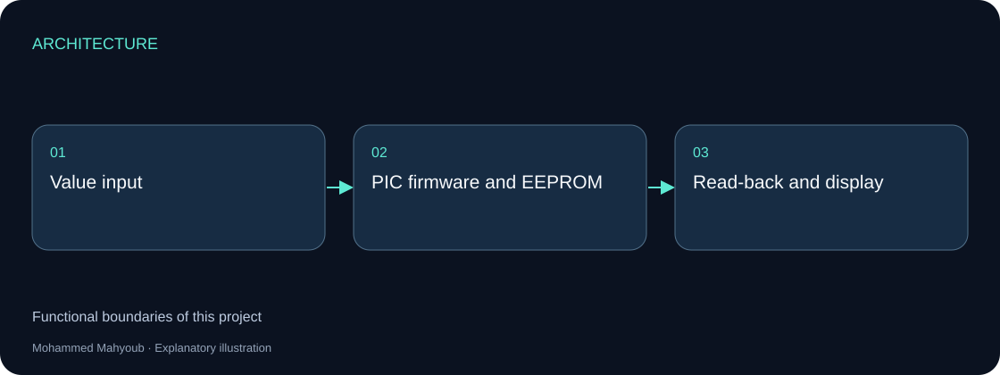
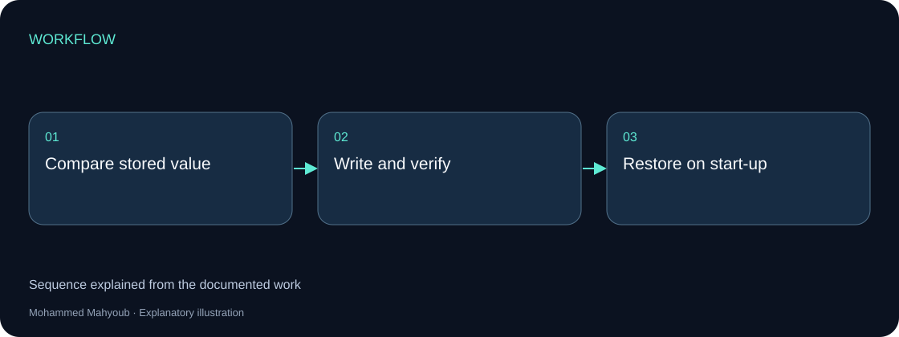
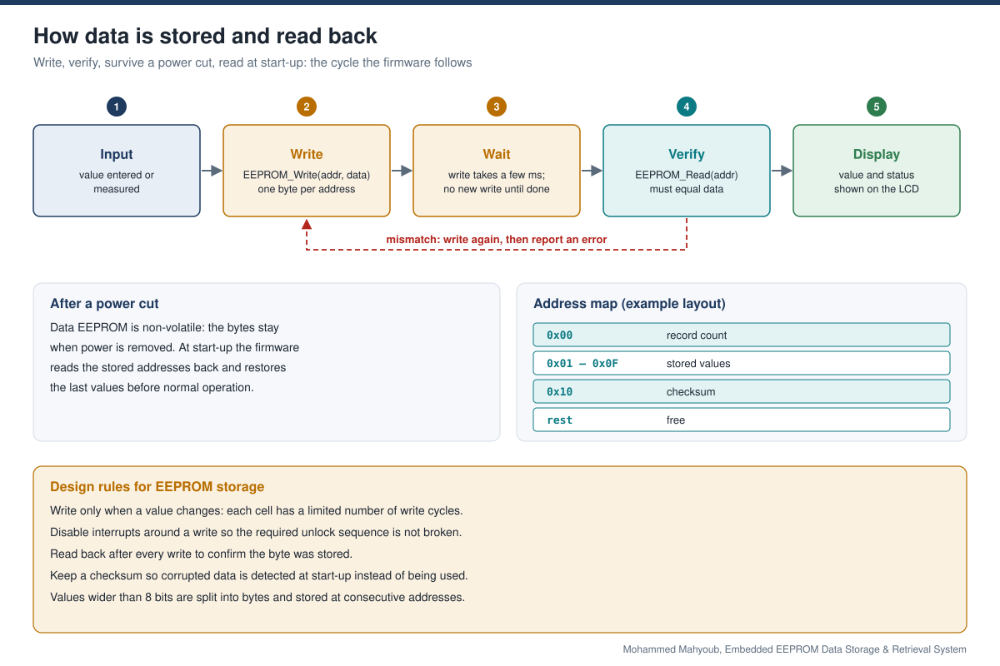

Embedded Systems · Non-volatile Storage
Embedded EEPROM Data Storage & Retrieval System
Implemented PIC-based data storage and retrieval using on-chip EEPROM, mikroC firmware and a display interface, preserving stored values across power loss.
Implemented Project
System architecture

Implementation scope
The firmware separates the value being measured or entered from the stored byte. Read-back verifies persistence, while the display exposes the retrieved value to the operator.
Engineering approach
Writing only when a value changes reduces unnecessary EEPROM writes. The public repository includes a store/read-back illustration and a reference snippet; the poster is a preview rather than a full schematic.

Write, verify and restore
The value is stored in on-chip EEPROM rather than ordinary RAM, so firmware can recover it after power loss. Write completion and read-back need to follow the selected PIC device and mikroC library.
| Step | Action | Expected observation |
|---|---|---|
| 1 | Store the example byte 42 at a valid EEPROM address | Write completes |
| 2 | Read the same address | The returned byte is 42 |
| 3 | Restart after a power cycle | Start-up reads the retained byte |
| 4 | Request storage of the unchanged byte | Write-on-change avoids a redundant write |
Reference snippet
This mikroC-style example comes from the repository explanation. It is not recovered project firmware or a complete device configuration.
void store_byte(unsigned char addr, unsigned char value) {
if (EEPROM_Read(addr) == value) return;
EEPROM_Write(addr, value);
Delay_ms(20);
if (EEPROM_Read(addr) != value) {
/* report a write error */
}
}
Valid addresses, timing, power stability and interrupt handling depend on the device and library. The mikroC EEPROM library documentation describes supported devices and write behavior. Multi-byte persistence needs a defined layout and integrity strategy; a successful single-byte read-back does not establish atomic multi-byte updates.
Visual documentation
Original project posters and interface screenshots are identified separately from explanatory source diagrams. The gallery documents this project only. Open any figure to inspect it at full available resolution.

